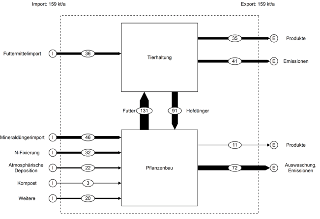

Gleichungssysteme und Ebenen
Einführung
Um die Bilanzierung in MFA und SFA zu veranschaulichen, betrachten wir Stickstoffflüsse in der Landwirtschaft. Insbesondere gehen wir auf Stickstoffflüsse in der Tierhaltung und im Pflanzenbau ein.
Futtermittel- und Mineraldüngerimporte sind die grössten Import-Flüsse ins System. Die Aufnahme von im Inland angebauten Nutzpflanzen durch Nutztiere (131 Tonnen Stickstoff pro Jahr) und die Nutzung von Hofdüngern als organische Dünger (91 Tonnen Stickstoff pro Jahr) stellen die wesentlichen Systeminternen Stickstoffflüsse zwischen der Tierhaltung und dem Pflanzenbau dar. Als Exportflüsse fallen neben den tierischen Produkten (35 Tonnen Stickstoff pro Jahr) und den pflanzlichen Produckten (11 Tonnen Stickstoff pro Jahr) auch grosse Emissionen an (112 Tonnen Stockstoff pro Jahr). Die Abbildung unten ist eine Vereinfachung aus der bereits thematisieren Studie zu Stickstoffflüssen in der Schweiz (BAFU 2013).

Gleichungssysteme
Zur mathematischen Beschreibung von MFA- und SFA-Systemen sind das Massen- und Energieerhaltungsgesetz, lineare Beziehungen zwischen In- und Outputflüssen sowie Konzentrationsverhältnisse wichtig.
Für jeden Prozess stellt STAN eine Bilanzgleichung pro Zeiteinheit auf welche das Massen-und Energieerhaltungsgesetz erfüllt. Somit muss die Summe der Inputs der Summe der Outputs und allfälligen Lageränderungen entsprechen. Beispiel: Summe Inputs in den Prozess Tierhaltung = 167 Tonnen Stickstoff pro Jahr = Summe Outputs aus dem Prozess Tierhaltung.
Transferkoeffizienten drücken eine lineare Beziehung zwischen In- und Outputflüssen eines Prozesses aus. So könnte man die Transferkoeffizienten des Prozesses Tierhaltung als Prozentwerte der Inputs darstellen:
21% der Stickstoffinputs gehen in Produkte
25% gehen in Emissionen über
54% gehen in Hofdünger
Der Prozess Pflanzenbau stellt somit eine “Blackbox” über ein sehr viel komplexeres System dar. Diese Vereinfachung ist sinnvoll, um beispielsweise die Grössenordnung verschiedener Prozesse und Flüsse darzustellen.
Konzentrationsgleichungen [Text folgt]
Ebenen
In der ersten Lektion haben wir die Materialflüsse im Abfallmanagement einer Gemeinde simuliert.